Abu Simbel - Egypt 2008
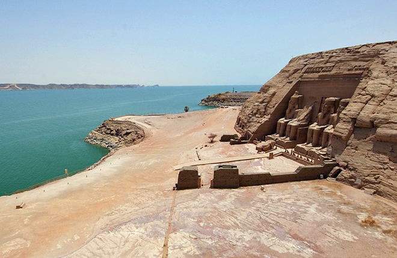
The most magnificent of the monuments built by Ramses II, Abu Simbel is both the perfect example of the ambition of his reign and also a model illustration for modern engineering. The entire temple was transplanted from its original location and lifted piece by piece to its current site by an international UNESCO team working against the clock to preserve it from being flooded by the Aswan High Dam in the 1960s.
The colossal stone statues that grace the facade are Pharaoh Ramses II's attempt to achieve immortality. It has worked. Today, visitors here still crane their necks in disbelief at the behemoth temples just as the Pharaoh's subjects would have done when the temples were first constructed.
We flew there on a very early flight from Aswan but were still beaten by hoards of tourists who arrived in coaches ...,
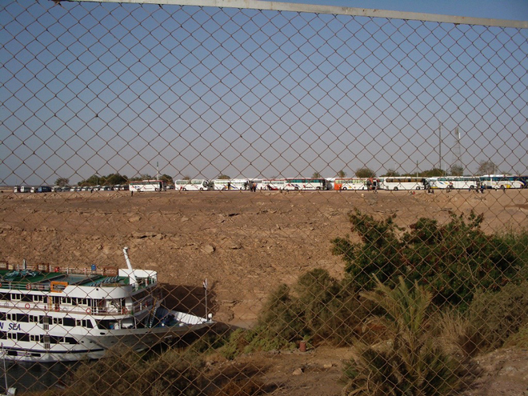
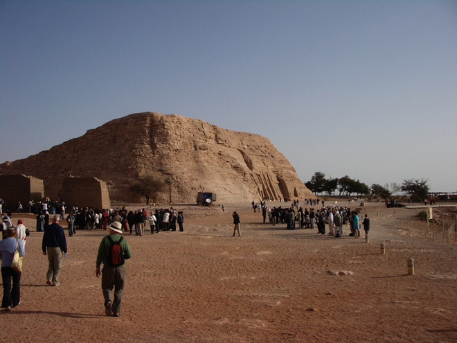
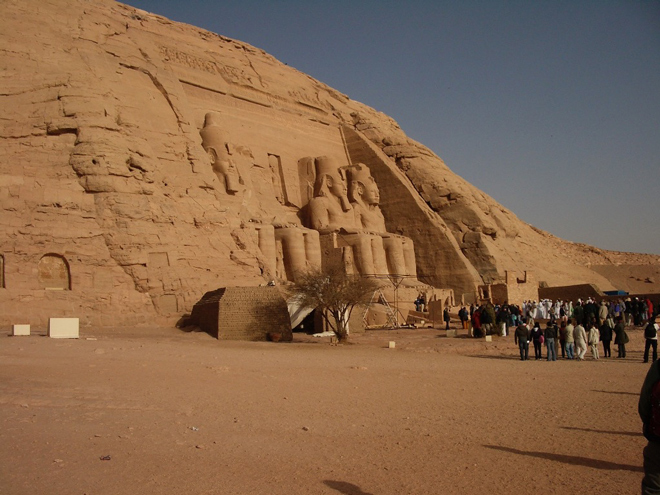
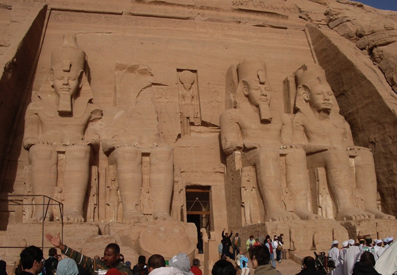
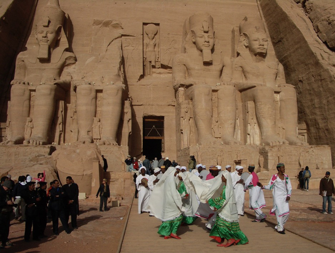
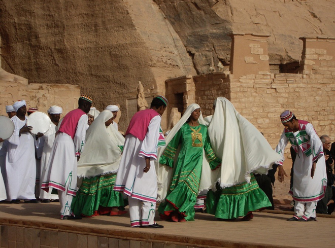
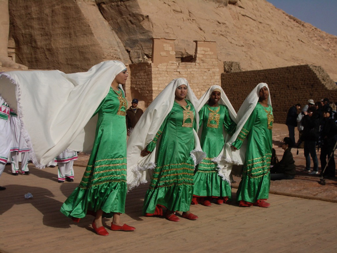
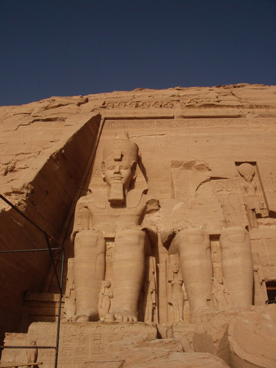
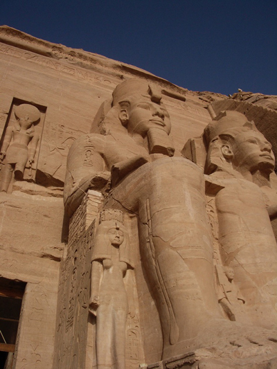
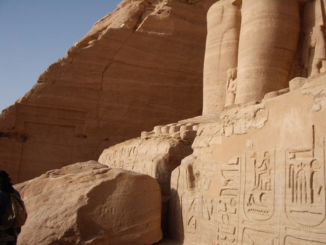
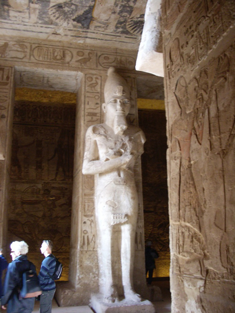
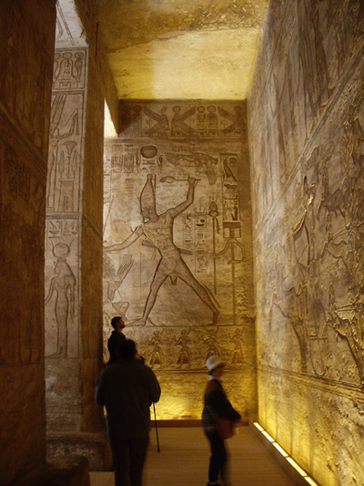
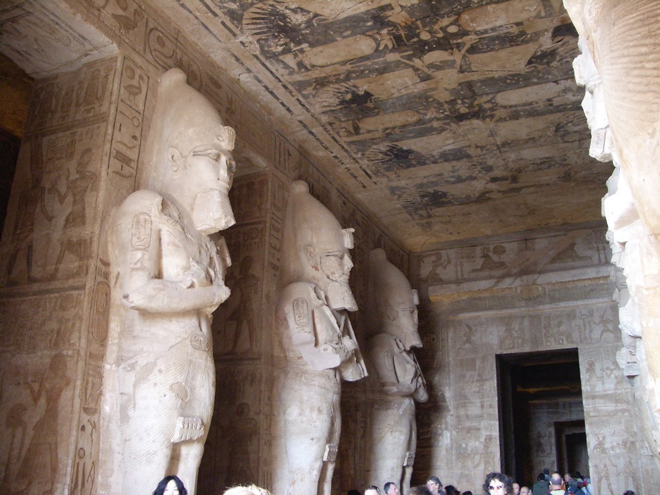
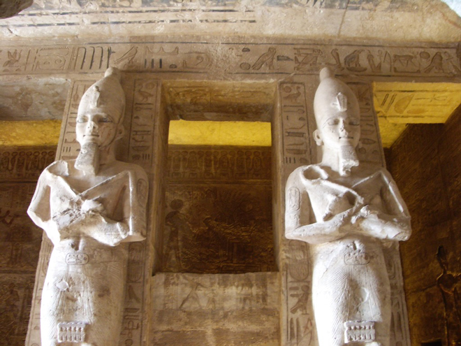
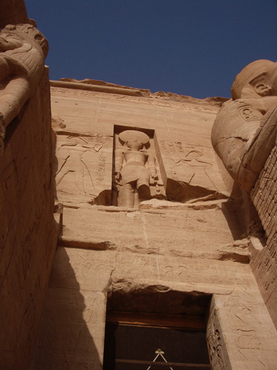
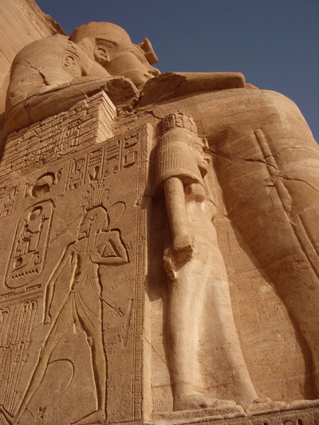
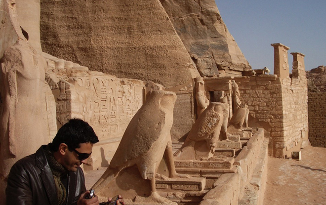
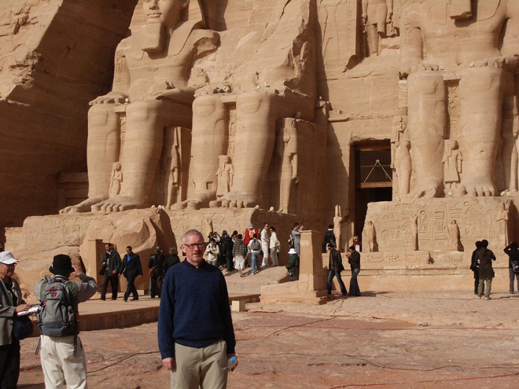
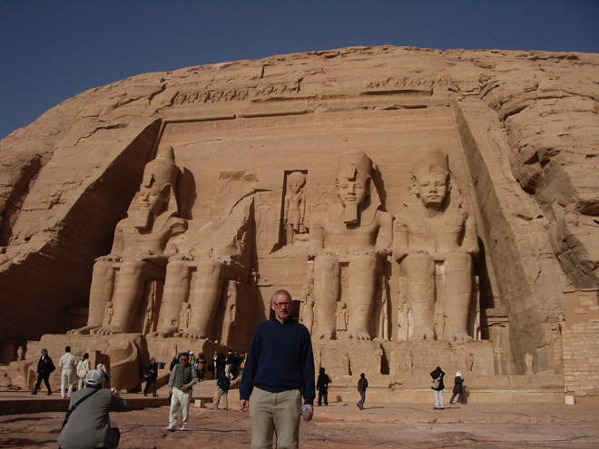
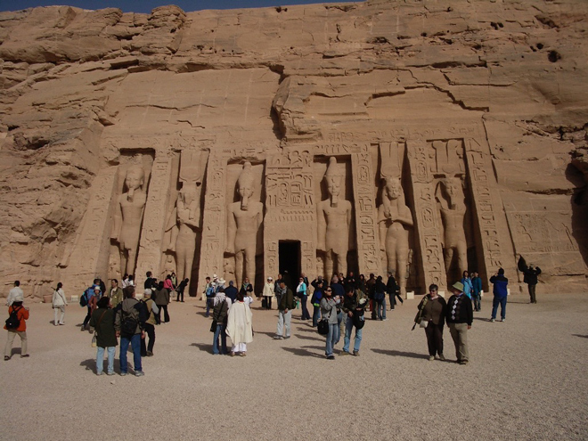
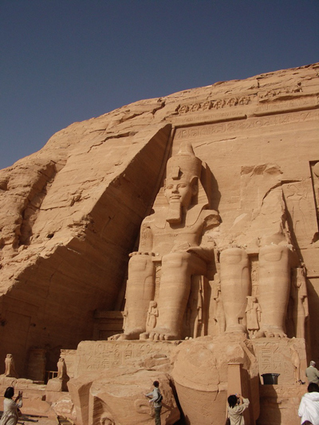
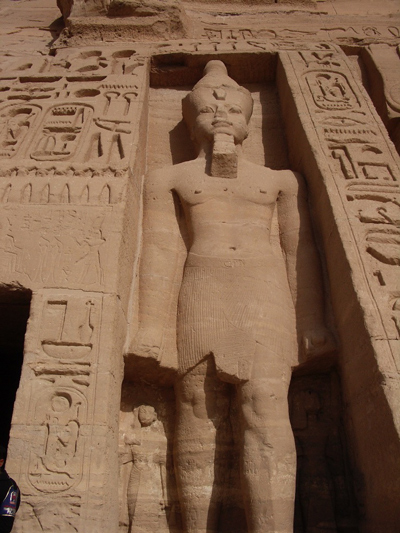
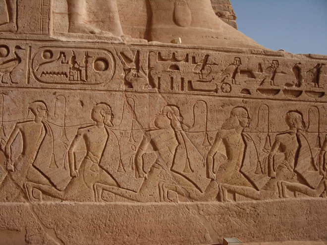
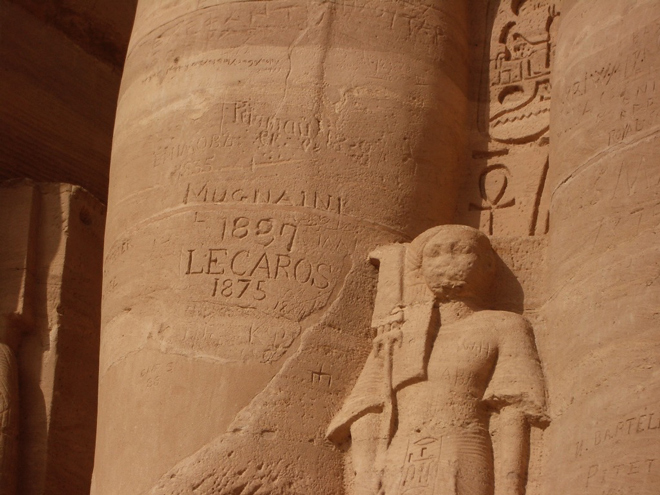
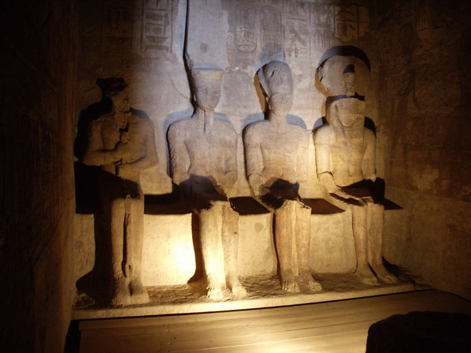
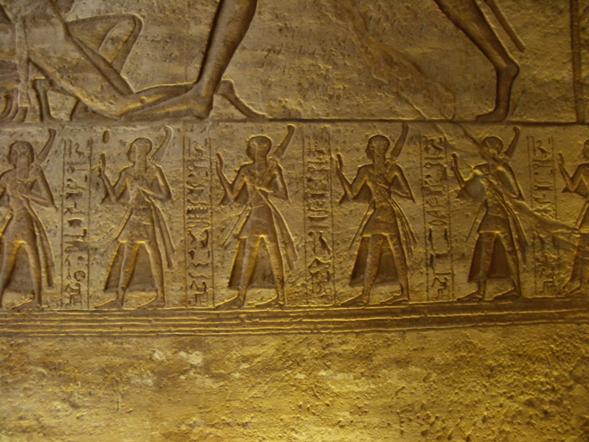
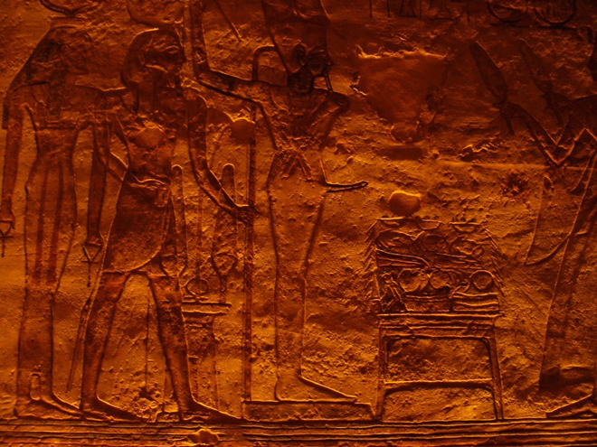
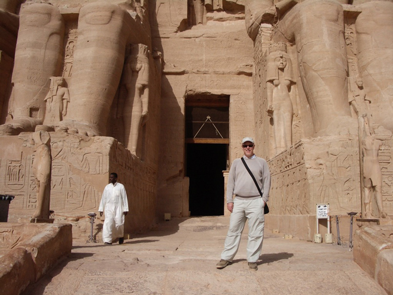
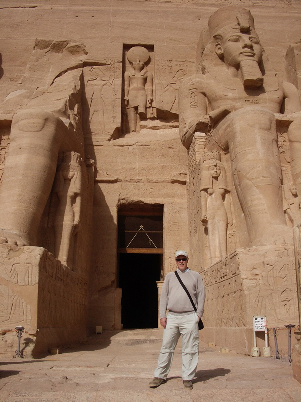
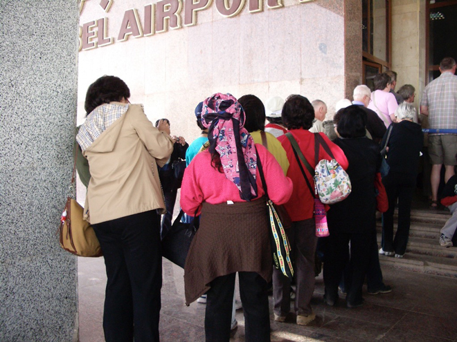
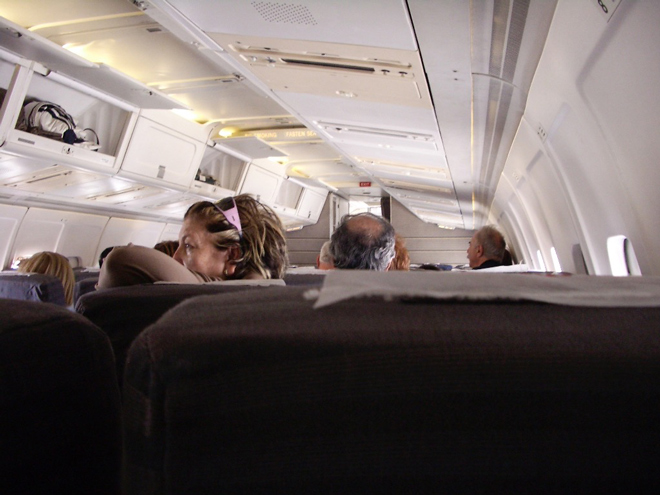